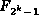
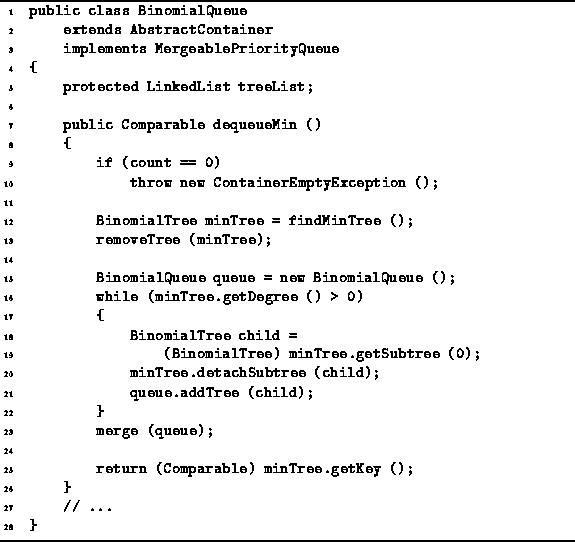
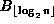
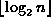

Data Structures and Algorithms
with Object-Oriented Design Patterns in Java
Data Structures and Algorithms
with Object-Oriented Design Patterns in JavaA binomial queue is a forest of heap-ordered binomial trees. Therefore, to dequeue the smallest item from the queue, we must withdraw the root of one of the binomial trees. But what do we do with the rest of the tree once its root has been removed?
The solution lies in realizing that the collection of subtrees of the root of a binomial tree is a forest! For example, consider the binomial tree of order k,

Taken all together, its subtrees form the binomial queue :
Therefore, to delete the smallest item from a binomial queue,
we first identify the binomial tree with the smallest root
and remove that tree from the queue.
Then, we consider all the subtrees of the root of that tree
as a binomial queue and merge that queue back into the original one.
Program  shows how this can be coded.
shows how this can be coded.

Program: BinomialQueue class dequeueMin method.
The dequeueMin method begins by calling findMinTree to find the tree with the smallest root and then removing that tree using removeTree (lines 12-13). The time required to find the appropriate tree and to remove it is
where n is the number of items in the queue.
A new binomial queue is created on line 15.
All the children of the root of the minimum tree are
detached from the tree and added to the new binomial queue (lines 16-21).
In the worst case, the minimum tree is the one with the highest order.
i.e., ,
and the root of that tree has  children.
Therefore, the running time of the loop on lines 16-21 is  .
.
The new queue is then merged with the original one (line 22). Since the resulting queue contains n-1 keys, the running time for the merge operation in this case is
 Copyright © 1998 by Bruno R. Preiss, P.Eng. All rights reserved.
Copyright © 1998 by Bruno R. Preiss, P.Eng. All rights reserved.